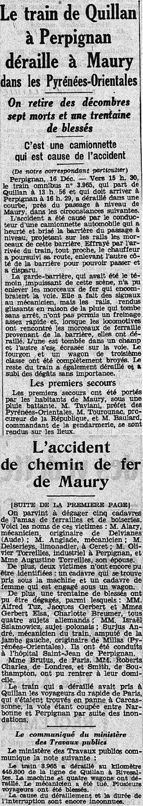
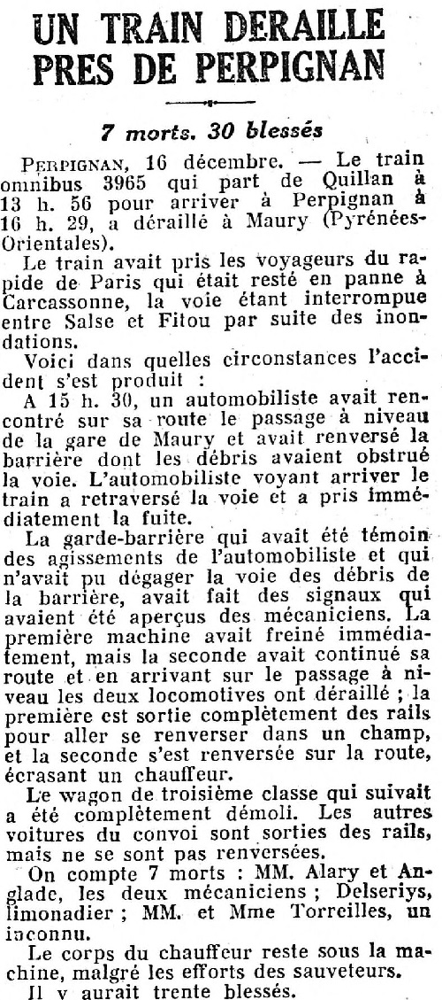
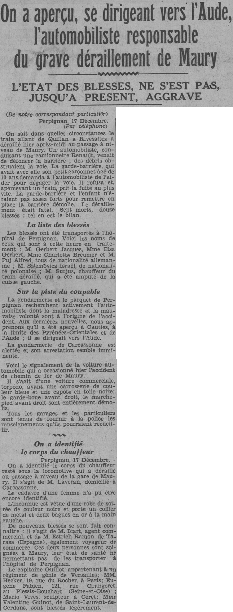

On parle de cinq morts
L'accident a été produit par un automobiliste imprudent Perpignan, 16 décembre. Le train qui a déraillé est le train omnibus 3.965 qui part de Quillan à 13 h. 56 et qui doit arriver à Perpignan à 16 h. 29.
Ce train avait pris les voyageurs du rapide de Paris qui était resté en panne à Carcassonne la voie étant interrompue entre Sals et Fitou.
Voici dans quelles circonstances l'accident s'est produit :
A 15 h. 30, un automobiliste avait rencontré sur sa route le passage à niveau de la gare de Maury et avait renversé la barrière dont les débris avaient obstrué la voie. L'automobiliste voyant arriver le train a retraversé la voie et a pris immédiatement la fuite.
La garde-barrière qui avait été témoin des agissements de l'automobiliste et qui n'avait pu dégager la voie des débris de la barrière, avait fait des signaux qui avaient été aperçus des mécaniciens. La première machine avait freiné immédiatement, mais la seconde avait continué sa route et en arrivant sur le passage à niveau les deux locomotives ont déraillé. La première est sortie complètement des rails pour aller se renverser dans un champ, et la seconde s'est renversée sur la route, écrasant un chauffeur.
Le wagon de troisième classe qui suivait a été complètement démoli.
Les autres voitures du convoi sont sorties des rails, mais ne se sont pas renversées.
Les premiers secours ont été portés par les habitants de Maury sous une pluie battante.
Voici les noms des victimes: M. Alary, mécanicien, originaire de Delvianes (Aude); M. Anglade, mécanicien; M. Delseriess, limonadier à Céret ; M. Epivier-Torreilles, industriel à Perpignan, et Mme Augustine Toreilles, son épouse. Il reste sous la machine le corps d'un chauffeur que l'on n'a pu encore retirer.

7 morts. 30 blessés
PERPIGNAN, 16 décembre. Le train omnibus 3965 qui part de Quillan à 13 h. 56 pour arriver à Perpignan à 16 h. 29, a déraillé à Maury (Pyrénées- Orientales).
Le train avait pris les voyageurs du rapide de Paris qui était resté en panne à Carcassonne, la voie étant interrompue entre Salse et Fitou par suite des inondations.
Voici dans quelles circonstances l'accident s'est produit :
A 15 h. 30, un automobiliste avait rencontré sur sa route le passage à niveau de la gare de Maury et avait renversé la barrière dont les débris avaient obstrué la voie. L'automobiliste voyant arriver le train a retraversé la voie et a pris immédiatement la fuite.
La garde-barrière qui avait été témoin des agissements de l'automobiliste et qui n'avait pu dégager la voie des débris de la barrière, avait fait des signaux qui avaient été aperçus des mécaniciens. La première machine avait freiné immédiatement, mais la seconde avait continué sa route et en arrivant sur le passage à niveau les deux locomotives ont déraillé ; la première est sortie complètement des rails pour aller se renverser dans un champ, et la seconde s'est renversée sur la route, écrasant un chauffeur.
Le wagon de troisième classe qui suivait a été complètement démoli. Les autres voitures du convoi sont sorties des rails, mais ne se sont pas renversées.
On compte 7 morts : MM. Alary et Anglade, les deux mécaniciens; Delseriys, limonadier; MM. et Mme Torreilles, un inconnu. Le corps du chauffeur reste sous la machine, malgré les efforts des sauveteurs. Il y aurait trente blessés. 


Perpignan, 17. On connaît aujourd'hui les circonstances exactes dans lesquelles est survenu hier, au début de l'après-midi, le grave déraillement d'un train omnibus à Quillan, petite commune de l'arrondissement de Perpignan. Au passage à niveau de cette localité, un automobiliste avait renversé, la barrière dont les débris obstruèrent, la voie. A la vue du train qui arrivait, il s'était empressé de prendre la fuite.
La garde-barrière, qui avait été témoin des agissements de l'automobiliste et qui n'avait pu dégager la voie des débris de la barrière, avait fait des signaux qui avaient été aperçus des mécaniciens. La première machine avait freiné immédiatement mais la seconde avait continué sa route et, en arrivant sur le passage à niveau, les deux locomotives ont déraillé.
Le première est sortie complètement des rails pour aller se renverser dans un champ et la seconde s'est renversée sur la route, écrasant un chauffeur. Le wagon de 3e classe qui suivait a été complètement démoli. Les autres voitures du convoi sont sorties des rails mais ne se sont pas renversées.
Les victimes
Les morts sont: MM. Arory, Anglade, tous deux mécaniciens ; Terserens, Olivier Toreille et la femme de ce dernier; le mécanicien Laveran, du dépôt de Carcassonne, et une femme inconnue.
Les blessés sont au nombre d'une vingtaine.

Perpignan, 17 décembre. déraillement du train-omnibus 3967 Quillan-Rivesaltes a fait plus de victimes qu'on ne l'avait tout d'abord cru. Sept personnes ont été tuées, il y a en outre une vingtaine de blessés. Voici, d'après l'enquête qui a aussitôt été entreprise, dans quelles circonstances s'est produit ce terrible accident :
Le conducteur de la camionnette arrivant devant le passage à niveau de Maury où la route nationale 117 coupe la voie de chemin de fer Perpignan-Carcassonne, heurta la barrière et la brisa. Le chauffeur, pour pouvoir passer, rejeta les débris sur la voie, releva l'autre côté de la barrière et s'enfuit à toute vitesse car le train-omnibus 3967 arrivait. Le garde-barrière, dans l'impossibilité matérielle d'enlever les débris, fit des signaux aux mécaniciens, mais elle ne fut aperçue que d'un seul. Il y avait en effet deux locomotives. Le convoi ne put s'arrêter en arrivant au passage à niveau obstrué par les débris de la barrière et dérailla.
Une des machines se jeta dans un pré tandis que l'autre se renversait sur la route.
Un chauffeur qui se trouva pris sous la locomotive fut ébouillanté. Un wagon de 3e classe vint s'écraser contre les locomotives. Le reste du convoi dérailla.
Sous la machine, le cadavre du chauffeur Laveran, de Carcassonne n'a pu être dégagé, non plus que le corps d'une femme dont l'identité est encore inconnue.
Une vingtaine de personnes ont été blessées; les plus gravement atteintes ont été transportées à l'hôpital de Perpignan.

Six morts Quinze blessés
Perpignan.
A Maury, arrondissement de Perpignan, un train qui avait pris les voyageurs du rapide de Paris, lequel n'avait pu passer par la ligne de Narbonne, toujours coupée par les inondations, a déraillé.
Les circonstances de l'accident
Le train qui a déraillé est le train omnibus qui part de Quillan à 13 h. 56 et qui doit arriver à Perpignan à 16 heures 29. Ce train avait pris les voyageurs du rapide de Paris qui était resté en panne à Carcassonne, la voie étant interrompue entre Salse et Fitou.
Voici dans quelles circonstances l'accident s'est produit :
A 15 h. 30, un automobiliste avait renversé la barrière du passage à niveau de la gare de Maury, dont les débris avaient obstrué la voie. L'automobiliste voyant arriver le train, a retraversé la voie et a pris immédiatement la fuite.
La garde-barrière, qui avait été témoin des agissements de l'automobiliste, n'avait pu dégager la voie.
La première machine avait freiné immédiatement, mais la seconde avait continué sa route et, en arrivant sur le passage à niveau, les deux locomotives ont déraillé. La première est sortie complètement des rails pour aller se renverser dans un champ et la seconde s'est renversée sur la route, écrasant un chauffeur qui n'a pu être encore retiré.
Le wagon de 3e classe qui suivait a été complètement démoli. Les autres voitures du convoi sont sorties des rails, mais ne se sont pas renversées.
Les victimes
Les premiers secours ont été portés par les habitants de Maury, sous une pluie battante. M. Taviani, préfet des Pyrénées-Orientales, M. Tourounac, procureur de la République, et M. Baulard, commandant de la gendarmerie, se sont rendus sur les lieux. Voici les noms des victimes: M. Alary, mécanicien, originaire de Delvianes (Aude); M. Anglade, mécanicien; M. Delserieys, limonadier à Céret; M. Olivier Torreilles, industriel à Perpignan, et Mmo Augustine Torreilles, son épouse. Il reste sous la machine le corps d'un chauffeur que l'on n'a pu encore retirer.

